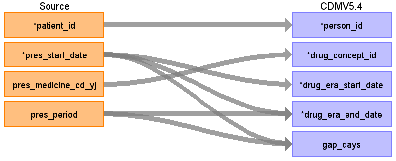
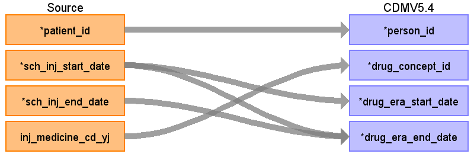

ターゲットテーブル:drug_era
・当テーブルはOMOP CDMのdrug_exposureテーブルから作成される。
・ETL処理についてはGitHub OHDSI/CommonDataModel に含まれているスクリプトを引用・改変している。
https://github.com/OHDSI/CommonDataModel/blob/main/rmd/sqlScripts.Rmd
・処理概要は以下の通り
30日ルール: 同一薬剤の投薬記録間隔が30日以内の場合、連続した一つのdrug_eraとして統合される。
30日以上空いた場合は「連続したdrug_eraにはならず、複数のdrug_eraレコード」として出力される。
成分レベル統合: drug_concept_idを成分（Ingredient）レベルに統合される。
重複除去: 重複する投薬期間を統合して正確な投薬日数を算出する。
空白日数算出: drug_era期間内の実際の非投薬日数を計算する。
本項では、drug_exposureの元となる、PrescriptionData と drug_eraテーブルの各項目のとの出力結果の対応を記載する。

| Destination Field | Source field | Logic | Comment field |
|---|---|---|---|
| drug_era_id | 一意の連番を設定する | ||
| person_id | patient_id | person.person_source_valueと結合してperson_idを取得・登録する |
|
| drug_concept_id | pres_medicine_cd_yj | drug_exposeにRxNormで登録されたコンセプトから「Ingredient：成分」を設定 | |
| drug_era_start_date | pres_start_date | drug_exposure_start_dateの（同一薬剤のと投与期間30日毎に）最初の日付 | |
| drug_era_end_date | pres_start_date pres_period |
drug_exposure_end_dateの（同一薬剤のと投与期間30日毎に）最後の日付 | |
| drug_exposure_count | 患者毎の対象期間の同一薬剤のdrug_exposeのレコード数（30日毎） | ||
| gap_days | pres_start_date pres_period |
drug_sub_exposure_start_dateとdrug_era_end_dateの日数（30日毎） |
本項では、drug_exposureの元となる、InjectionData と drug_eraテーブルの各項目のとの出力結果の対応を記載する。

| Destination Field | Source field | Logic | Comment field |
|---|---|---|---|
| drug_era_id | 一意の連番を設定する | ||
| person_id | patient_id | person.person_source_valueと結合してperson_idを取得・登録する |
|
| drug_concept_id | inj_medicine_cd_yj | drug_exposeにRxNormで登録されたコンセプトから「Ingredient：成分」を設定 | |
| drug_era_start_date | sch_inj_start_date | drug_exposure_start_dateの（同一薬剤のと投与期間30日毎に）最初の日付 | |
| drug_era_end_date | sch_inj_start_date sch_inj_end_date |
drug_exposure_end_dateの（同一薬剤のと投与期間30日毎に）最後の日付 | |
| drug_exposure_count | 患者毎の対象期間の同一薬剤のdrug_exposeのレコード数（30日毎） | ||
| gap_days | drug_sub_exposure_start_dateとdrug_era_end_dateの日数（30日毎） |